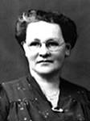

FRANÇOIS MARTINfiche familiale
*******************************************************************************
François MartinNaissance le 15 septembre 1876
Père: François MarinMère: Delphine SincennesMariage: 25 avril 1899 à Ste-Cécile de Masham (La Pêche)
1ère épouse: Marie-Alda Bourgeoisdécède avant 1903
Père: Médéric BourgeoisMère: Rachel Comeau
*******************************************************************************
| 
|
Enfant 1 Alda Martindécède à l'âge de 61 ans. Naissance en 1900 à Ste-Cécile de Masham (La Pêche) Décès le 2 mars 1961 à Hull Sépulture au cimetière St-Rédempteur de Hull (ses ancêtres)Mariage le 6 octobre 1925 à Ste-Cécile de Masham (La Pêche) Conjoint: Domina Beaudoinn. 15 jan 1894 d. 5 avril 1963. (sa famille) |
*******************************************************************************
Mariage: 20 avril 1903 à Ste-Cécile de Masham (La Pêche)
2ème épouse: Eugénie LaferrièrePère: Norbert LaferrièreMère: Agnès-Agnèstine Desjardins
*******************************************************************************
Enfant 1 Berthe MartinMariage le 15 août 1934 à Ste-Cécile de Masham (La Pêche)
Conjoint: Émile Legrosn. 23 jul 1900 d. 30 jan 1964
-------------------------------------------------------------------------------
Enfant 2 Éva MartinMariage le 30 mars 1940 à Ste-Cécile de Masham (La Pêche)
Conjoint: Joseph-Eugène-Wilfrid Legault
*******************************************************************************